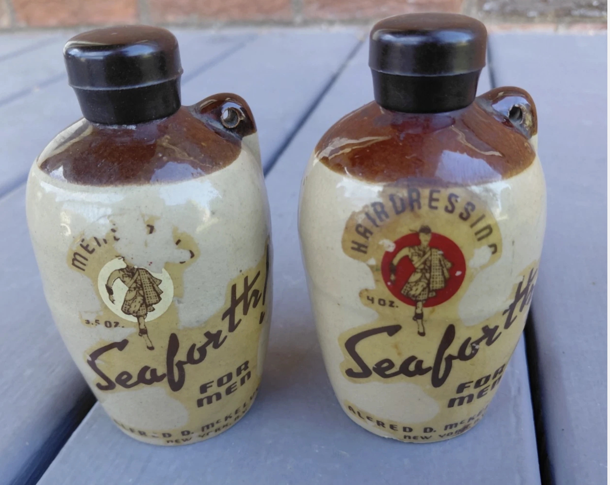
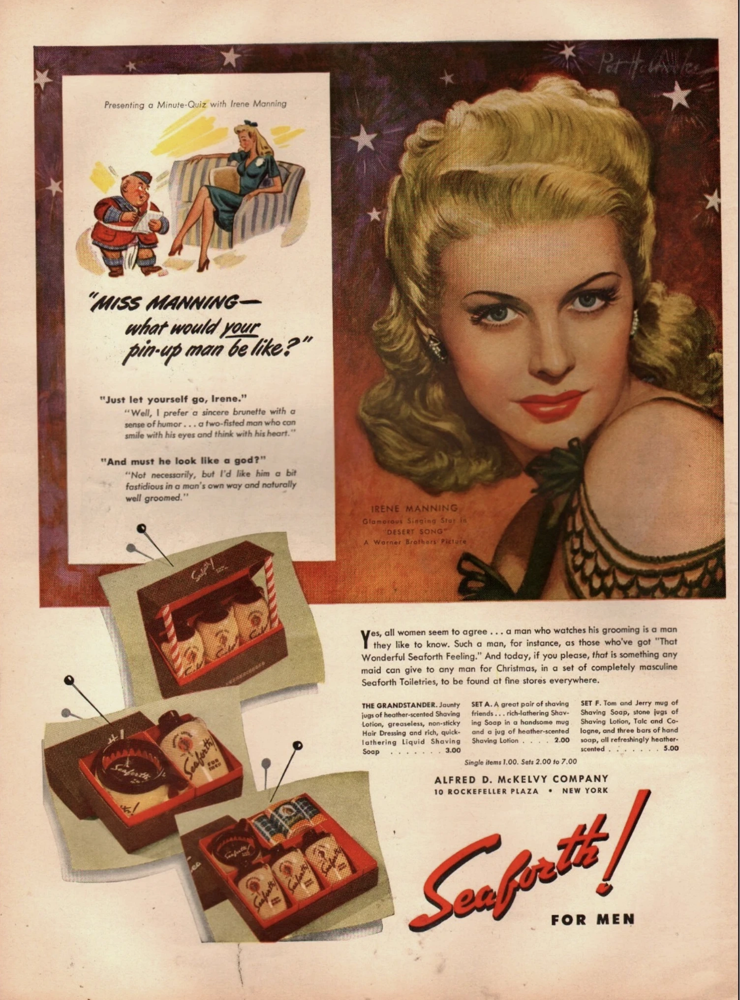

Seaforth and Nestle-LeMur – From Wartime Aftershaves to American Grooming Culture
The history of Seaforth represents more than the development of a successful American aftershave line. It reflects the transformation of twentieth-century men’s grooming from a niche market into a major commercial industry shaped by advertising, wartime consumer culture, industrial manufacturing and corporate brand consolidation.
By the mid-twentieth century, Seaforth had become one of the most recognisable names in American men’s toiletries. Although it never reached the commercial dominance of Old Spice, the brand established a lasting presence through its distinctive Scottish-inspired identity, unusual packaging design and broad product range.
Its later acquisition by the Nestle-LeMur Company also provides insight into the evolution of the American cosmetics industry. By the 1960s, Nestle-LeMur had developed far beyond its earlier association with permanent waving technology and had become part of a larger network of grooming, fragrance and cosmetic brands operating across the United States.
The Origins of Seaforth
Seaforth emerged during a period of significant change within the American grooming market.
In the late 1930s, Alfred Douglas McKelvy founded the Alfred D. McKelvy Company in Minneapolis, Minnesota. Around 1939, the first Seaforth products entered the American market.
At the time, men’s toiletries were becoming increasingly profitable. Companies recognised that shaving products, aftershaves and masculine fragrances could be marketed not only as practical necessities, but also as symbols of sophistication, modernity and masculine identity.
The commercial success of products such as Old Spice demonstrated that male consumers were increasingly willing to purchase branded grooming products with strong visual identities and recognisable fragrances.
McKelvy adopted a similar strategy while developing a distinctive Scottish-inspired aesthetic.
The name “Seaforth” referenced the historic Seaforth Highlanders regiment, while the packaging borrowed visual elements from whisky culture, including ceramic jug-shaped bottles and heavy shaving mugs.
This visual identity became one of the defining characteristics of the brand and helped distinguish Seaforth within the rapidly expanding American toiletries market.
Fragrance Development and Masculine Identity
The original Seaforth fragrance was known as “Heather and Fern” or “Heather ’n Fern.”
Contemporary industry reports suggest that Alfred D. McKelvy spent considerable time experimenting with fragrance combinations involving heather, fern and peat moss before selecting the final formula.
According to period accounts, public fragrance testing was reportedly conducted through telegraph offices, where male customers voted on preferred scent samples.
Whether partially promotional or entirely factual, these stories reveal how seriously fragrance development and masculine branding were already being treated within the American cosmetics industry during the late 1930s.
The scent itself was intended to communicate ruggedness, tradition and refinement simultaneously.
This reflected a broader cultural shift in which masculinity was increasingly marketed through fragrances, grooming products and lifestyle-oriented branding.
The Second World War and the Expansion of Men’s Grooming
The Second World War dramatically accelerated the American market for men’s toiletries.
As millions of men entered military service, daily grooming products became more important within both military life and civilian gift culture. Women frequently purchased grooming kits and aftershave sets for husbands, sons and partners serving overseas.
Seaforth benefited heavily from this development.
During the 1940s, the company expanded into a broad product range including:
After-shave lotion
Cologne
Talcum powder
Shaving soap
Brushless shave cream
Hair dressing products
Deodorants
Travel kits
Gift presentation boxes
The visual language of Seaforth advertising during this period emphasised durability, masculinity and reliability.
Packaging itself became a selling point.
Advertisements frequently described the containers as “sturdy and attractive,” reflecting the growing importance of industrial packaging design within American consumer culture.

Acquisition by Vick Chemical Company
The rapid commercial success of Seaforth attracted larger corporations seeking to expand into cosmetics and personal care products.
In 1941, the Alfred D. McKelvy Company was acquired by Vick Chemical Company.
This acquisition formed part of Vick Chemical’s broader diversification strategy during the late 1930s and early 1940s, which also included investments in fragrance and cosmetics companies such as Prince Matchabelli.
The acquisition significantly expanded Seaforth’s manufacturing and distribution capabilities.
By the early 1940s, production had expanded into multiple facilities including factories in:
Minneapolis
Los Angeles
Mexico City
The products also became available internationally.
This period transformed Seaforth from an independent grooming line into a nationally distributed American men’s toiletries brand.
Packaging, Design and Mid-Century Consumer Culture
One of the most historically interesting aspects of Seaforth was its packaging design.
The company used heavy ceramic and later milk-glass containers that differed substantially from the lighter packaging used by many competitors.
Different fragrance lines were identified through typography and colour systems:
Green lettering for Heather
Red lettering for Spiced
Darker black decoration for later versions
The shaving mugs and ceramic bottles later became highly collectible objects associated with mid-century American grooming culture.

Historically, this packaging reflects broader developments in American industrial design after the Second World War.
Consumer goods were increasingly expected to combine functionality, visual identity and emotional branding.
Seaforth’s containers were therefore not merely packaging, but part of the broader masculine image the brand attempted to create.
Seaforth Under Nestle-LeMur
After passing through several ownership changes involving Chesebrough-Pond’s and Mary Chess, Seaforth was acquired by the Nestle-LeMur Company in 1964.
The acquisition illustrates how Nestle-LeMur itself had evolved by the mid-twentieth century.
Earlier decades of the company had been closely connected to permanent waving technology and the industrial development of hair treatment systems associated with Charles Nessler.
By the 1960s, however, Nestle-LeMur had developed into a broader cosmetics and grooming corporation controlling multiple product lines and fragrance brands.
At various points, the company managed or distributed brands including:
Clubman
Napoleon men’s toiletries by Pinaud
Yu
Club
Seaforth
Under Nestle-LeMur ownership, Seaforth received several additional fragrance variations including:
Sea Spice Lime (1966)
Scotch Leather (1968)
Dominican Bay Rum (1968)
These fragrances reflected changing trends in American masculinity during the 1960s, when citrus, leather and bay rum scent profiles became increasingly fashionable within men’s grooming culture.

Available evidence also suggests that Nestle-LeMur increasingly prioritised its Clubman line of men’s toiletries during this period.
As a result, the Seaforth product range gradually became smaller over time.
From Hair Technology to Grooming Empire
The history of Seaforth also reveals something larger about the evolution of the American cosmetics industry.
The involvement of Nestle-LeMur demonstrates how companies originally associated with technical hair treatments and permanent wave systems gradually expanded into broader consumer markets involving:
Fragrances
Men’s grooming
Personal care
Beauty products
Cosmetics distribution
This transition reflects a broader industrial pattern visible throughout the twentieth century.
Technical innovation alone was no longer sufficient. Long-term growth increasingly depended on branding, product diversification and the acquisition of established consumer names.
By the post-war decades, many cosmetics companies were evolving away from purely technical identities and toward lifestyle-oriented consumer branding.
Seen in this context, Seaforth was not simply an aftershave brand.
It became part of a much larger network of cosmetic manufacturing, marketing and consumer culture that shaped the American grooming industry after the Second World War.
Decline and Modern Revival
By the late twentieth century, Seaforth had largely disappeared from mainstream retail markets.
Although some aftershave products remained available into the early 1980s, the brand gradually lost visibility as the men’s grooming market changed and corporate priorities shifted toward other product lines.
For several decades, Seaforth survived primarily through vintage bottles, shaving mugs, advertisements and collector communities interested in traditional American grooming culture.
Despite its decline, the brand retained a nostalgic status among wet shaving enthusiasts and collectors of mid-century men’s toiletries.
In the early twenty-first century, Seaforth experienced a modern revival through the growing heritage wet shaving movement.
A contemporary interpretation of the Seaforth name was reintroduced by Spearhead Shaving Company, which sought to preserve elements of the original brand identity while adapting the products for modern wet shaving audiences.
In 2025, Dennis from Spearhead announced that the Seaforth brand would transition to House of Mammoth under the leadership of Ben Esposito, with a relaunch planned for 2026.
This revival demonstrates how historic grooming brands can continue to evolve long after disappearing from mainstream commercial markets.
Rather than functioning as direct continuations of the original corporations, these modern revivals reinterpret historical brand identities for contemporary enthusiast communities while preserving elements of traditional fragrance culture and wet shaving heritage.
Timeline
1938 — Alfred D. McKelvy Company founded
1939 — First Seaforth products released
1941 — Acquired by Vick Chemical Company
1942 — Headquarters moved to New York
1953 — Black Watch fragrance introduced
1956 — Matchabelli-Seaforth division created
1958 — Chesebrough-Pond’s acquires Seaforth
1962 — Mary Chess acquires Seaforth
1964 — Nestle-LeMur Company acquires Seaforth
1966 — Sea Spice Lime introduced
1968 — Scotch Leather and Dominican Bay Rum released
Early 1980s — Seaforth largely disappears from mainstream retail markets
Early 2020s — Seaforth revived by Spearhead Shaving Company
2025 — Transition of the modern Seaforth brand to House of Mammoth announced
2026 — Planned relaunch of the modern Seaforth line
Sources and References
Vick Chemical Company Annual Reports (1941–1957)
Chesebrough-Pond’s corporate records
Historical Seaforth advertisements and packaging material
Trademark filings and registration records
The American Perfumer & Essential Oil Review
Frederic, W. “Success Story: Seaforth Cosmetics” (1945)
Collector archives and wet shaving community documentation
Mid-century grooming industry publications